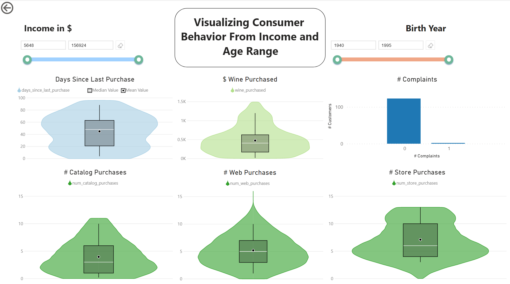

This project was created by John Cochran and Garrett Swearingen for Dr. Khairi Reda's Data Visualization course at IUPUI during the Fall 2021 semester. We aimed to provide tools to explore relationships between different factors relating to customer purchasing habits. You can use this to investigate questions such as:
-How does the income of a customer affect how much wine they are likely to purchase?
-Do younger customers tend to buy their products through different means (e.g. web vs. store)?
-In what ways are purchasing habits of people with children/teenagers different?
The visualization contains three different views. Use the arrows under the visualization to navigate across the different views.
View 1
View 2
The first two views allow you to filter the customers by certain variables and gauge view the distributions of other variables for those customers. Distributions are displayed as violin plots, with the thickness of areas indicating the amount of data distributed in those areas. Box plots within the violin plots show the mean, median, and interquartile range of the data. The first view features marital status and education filters and the second view features income and birth year filters.
View 3
The third plot enables you to visualize direct relationships among pairs of variables. You can hover your mouse across the different points to view their ID along with their X and Y values. The buttons on the top allow you to choose a regression line to attempt to fit the data. This way you can gauge whether a line, parabola, exponential curve, or some other function best explains the relationship of the two variables.
Data can also be scaled using the transformation buttons on the bottom and left of the visual. These buttons visually scale the desired axis down according to the selected transformation function. Note that this works independently from the regression functions. A linear regression function won't appear linear if one of the axes is scaled.
Akash Patel's dataset from Kaggle (2021) was used for this visual.